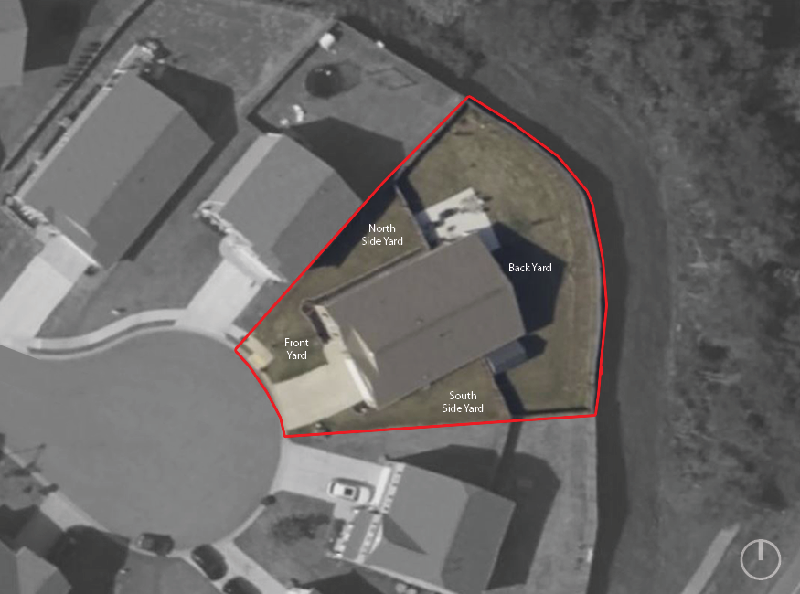

Stewart Residence - Planting Concept
01/19/2023: First draft of a planting plan based on several cleint conversations.
The Site
A single family residence in the greater Greenville, SC region.
Front of House
Work with existing shrubs, add color interest.
South Side Yard
Add durable perennials that will support pollinator wildlife.
North Side Yard
Add durable perennials that will add color interest.
Back Yard, looking North
Intent: provide visual screening from neighbor's property and color interest along the back fence.

Existing

Proposed
North Side Yard, looking North
Intent: provide visual screening from neighbor's property
Back Yard, looking South-East
Intent: provide color interest along back fence.
The Plan

Cost Estimate
Pricing reasearch is in the works, stay tuned...
| # | Plant Name | Size | Quantity | Cost |
|---|---|---|---|---|
| 1 | aaa | x" | # | $ |
| 2 | bbb | x" | # | $ |
| 3 | ccc | x" | # | $ |
3D items
Just a test, just for fun :)